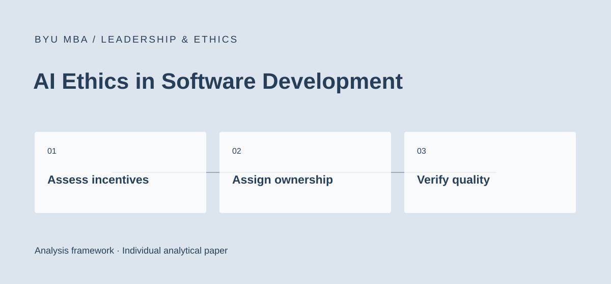

Individual analytical paper · 2026
AI Ethics in Software Development
An individual MBA ethics paper connecting my software engineering background with the organizational decisions behind AI adoption. It examines how incentives, accountability, and review practices affect people who rely on software.
- My role
- Author
- Year
- 2026
- Work type
- Individual analytical paper
- Focus
- Stakeholder analysis · Engineering responsibility · Risk assessment

My analysis
I examined the gap between generating code quickly and producing reliable software. The paper considered how deadlines and productivity measures can influence whether teams understand, review, and test a change before releasing it.
Stakeholder considerations
Managers set budgets and delivery expectations. Engineers evaluate technical behavior and raise concerns. Customers rely on the result but usually have limited ability to inspect the software. My analysis considered how those differences affect who makes decisions and who carries the risk.
Analysis summary
| Management decision | Risk to examine | Recommended practice |
|---|---|---|
| Productivity measures | Rewarding output without quality | Include rework and reliability |
| Code ownership | Unclear responsibility for a change | Assign accountable engineering review |
| Release review | Accepting a convincing demonstration too early | Verify behavior and integration |
| Risk level | Using identical checks for every use case | Match review to potential harm |
Framework summarized from my preparation, analysis, and reflection.
Ethical frameworks
The paper applied duty-based ethics, consequences, professional character, and expectations between companies and their stakeholders. These perspectives supported an approach that evaluates both productivity benefits and the potential cost of failures.
Recommendations
My recommendations emphasized clear engineering ownership, human review, appropriate testing, and productivity measures that account for rework and reliability. The level of review should reflect the possible consequences of an error.